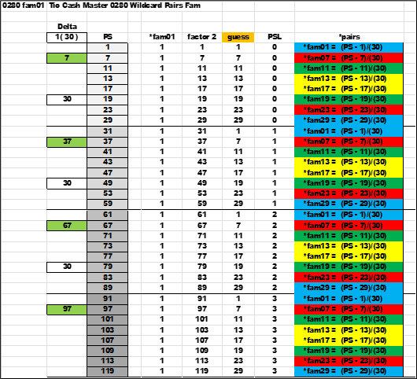
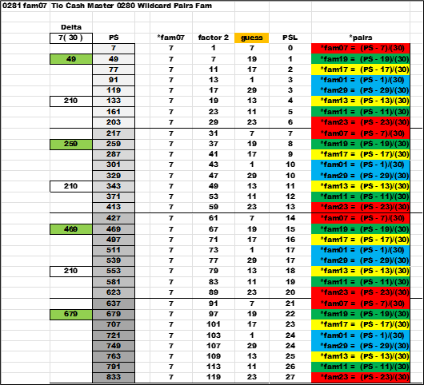
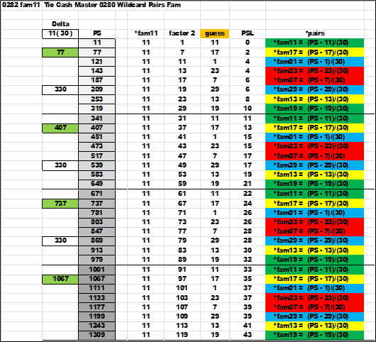
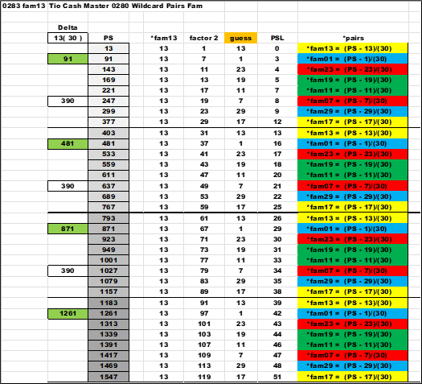
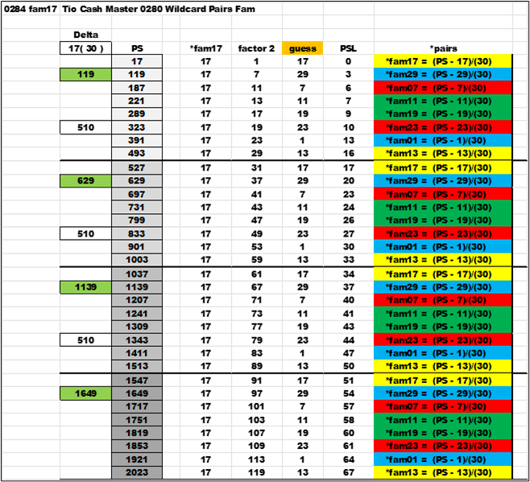
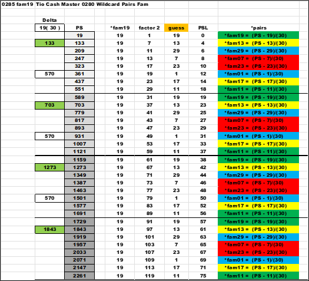
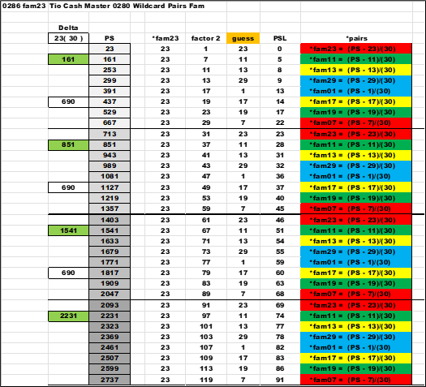
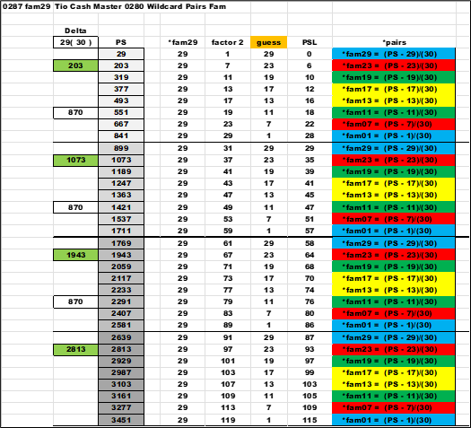

Here is *fam01 the *pairs are color coded.
a) Blue *fam01 and *fam29
b) Red *fam07 and *fam23
c) Green *fam11 and *fam19
d) Yellow *fam13 and *fam17
The second record is highlighted under 'Delta' for tracking , the actual delta is in the white cell , a value of thirty. The guess column is used to assign the proper *fam. Note the colors are balanced , and symmetric. Keep track of the blue color as we move forward. The bold line and the gray scale under PS delineate a group .
Here is *fam01 , the blue cells are on the outside edges of a group.
Next is *fam07. First the colors are still symmetric. But , they are shifted from the above chart. Note the blue has moved from the edge of a group and is now centered.
Next is *fam11. The blue is now shifted outside the center by one row. Also , all the other formulas are moving the same direction.
Next is *fam13. The blue has shifted again one more away from the center. Think like a bubble upwelling from the center.
Next is *fam17. This is the breakpoint , just past the midpoint. The blue is in the same position as *fam13. The color has not moved. But , the equation inside the blue color have flipped positions. More Symmetry.
Next is *fam19. The blue is moving back towards the center. Compare this with *fam11. The colors are the same , but the equations are flipped.
Next is *fam23. The blue is back at the center. Compare this with *fam07. The colors are the same , but the equations are flipped.
Finally , is *fam29. The blue is back at the start , the edge. Compare this with *fam01. The colors are the same , but the equations are flipped.